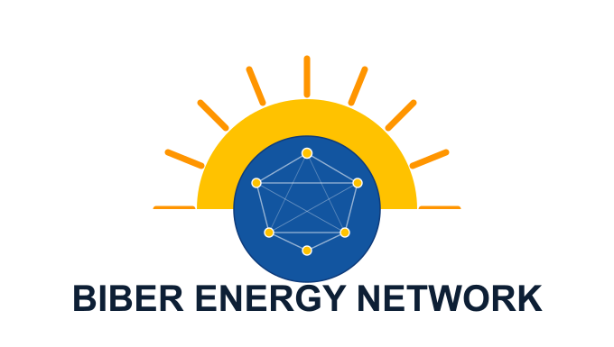

Biber Solar
Grüezi, ich bin Patrick Biber
Ich wohne in Uerikon am Zürichsee in der Schweiz.
Angestellt bei eConnect als Fachberater für Solar Photovoltaik Systeme.
Ich berate Hausbesitzer und Betriebe in der Schweiz bei der Planung und Optimierung von Photovoltaikanlagen. Dabei unterstütze ich von der ersten Idee bis zur fundierten Entscheidungsgrundlage. Der Fokus liegt auf verständlicher Beratung, technisch sauberen Lösungen und einer nachhaltigen Nutzung von Solarenergie.
Hier sammle ich Kurznotizen, Links und Projekte zu Solar, IT, Linux und Politik.
Ich freue mich jederzeit auf deinen Kontakt!
📱 +41 78 662 59 21📧 patrick@biber.solar
💬 Signal
 WhatsApp
Threema
WhatsApp
ThreemaDu findest mich auch auf Linkedin.
Hier ist mein public SSH key.
Mein Github user ist patbiber.
Patrick Biber | Hermann Hiltbrunner-Weg 24 | CH-8713 Uerikon
🎉 It's live: the Solar Installer Handbook for Ghana
My solar knowledge base is now online as a free handbook for solar installers in Ghana and West Africa. Safety, sizing, installation, maintenance, plus a built-in system calculator.
Swiss precision meets African sunshine. Check it out, share it with an installer who needs it, and let's build more good solar. ☀️
The Solar Handbook for Africa☀️ Solarteur Wissensdatenbank – jetzt online
Während meiner Ausbildung zum Solarteur habe ich alle Formeln, Berechnungen und Grundlagen zu PV, Solarthermie, Wärmepumpen und Elektrotechnik in einer strukturierten Wissensdatenbank zusammengefasst – und sie jetzt öffentlich zugänglich gemacht.
Die Seite läuft auf meinem eigenen VPS mit MkDocs Material, die Inhalte sind auf GitHub versioniert.
GLP Energy Lab zum Thema Hausspeicher
Ich durfte kürzlich beim GLP Energy Lab einen Vortrag zum Thema Hausspeicher halten. Im Zentrum standen Praxiserfahrungen, typische Fragestellungen aus dem Alltag und die Frage, wann Batteriespeicher technisch und wirtschaftlich sinnvoll sind.
Besonders schätze ich die offenen und fundierten Diskussionen an diesen Treffen. Der Austausch mit Fachleuten, Interessierten und Praktikern ist jedes Mal sehr bereichernd und zeigt, wie viel Know-how und Engagement in diesem Netzwerk steckt.
Solche Gespräche motivieren mich, weiterhin praxisnahe Lösungen rund um Photovoltaik, Speicher und intelligente Energienutzung voranzutreiben.Download: Präsentation PV Speicher
Linklist
Energiefranken – die Plattform für Fördergelder im Energiebereich
Meine Solarteur Formeln PV, ST, WP, Elektrotechnik, Wärmelehre auf GitHub
Berechnen Sie bei Pronovo Ihren Förderbetrag / Vergütungssatz des Bundes Ihrer neuen Solar Anlage
EnergieSchweiz / In sieben Schritten zu Ihrer Solaranlage
European Commission / Photovoltaic Geographical Information System (PVGIS)
Solarpotential aller Schweizer Hausdächer Sonnendach.ch
Die Freqzenz des Europäischen Stromnetzes von Swissgrid
SAC Splitboardkurs Feb. 2026 in St. Antönien. Danke an alle Teilnehmer und dem Bergführer Dominik sunatiger.ch. Es war Super mit euch!
Solar-Biber Chat
Stelle Fragen zu Photovoltaik, Speicher, Eigenverbrauch oder Wärmepumpe.
🤖 Solar-Biber Chat öffnen Der Chat wird über ChatGPT bereitgestellt und öffnet sich in einem neuen Tab.